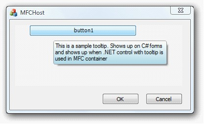

SupperTooltip can be displayed in the User Control embedded in the MFC Dialog.
Note: Support has been given in source level.

Figure 1453: SuperToolTip Displayed in MFC Dialog
 Note: Support has been given in source
level.
Note: Support has been given in source
level.